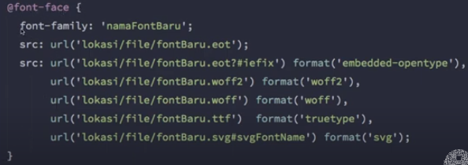
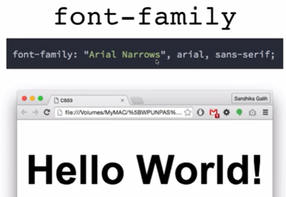
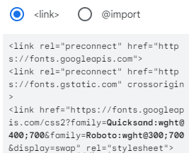

Font
Proses including font :
- Menggunakan font family dari bawaan css (font-family)
- Menggunakan layanan dari google (google font)
- Kunjungi google font
- Pilih jenis font
- Klick tanda plus pada jenis fot yang sudah di pilih
- Kemudian klik icon berikut yang terletak di kanan atas
- Pilih metode import dan sisipkan pada tag head file html
- Menggunakan Font Face, caranya : 
Pada contoh code diatas, font yang diminta bernama Arial Narow, kemudian jika ga ada gunakan Arial, jika ga ada juga gunakan sans-serif, sans-serif adalah nama jenis font, bukan nama fontnya.
Jika developer typo dalam menuliskan nama font maka akan langsung menggunakan font belakangnya, seperti ini
Cara menggunakan google font :

Metode link

Metode import